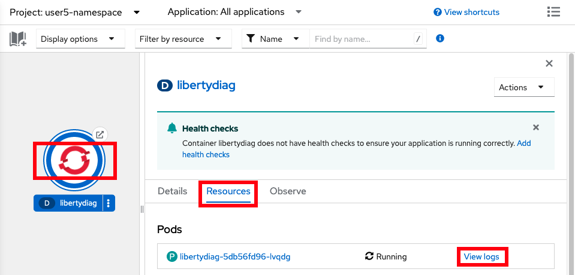

Lab: Java OutOfMemoryErrors
This lab covers how to investigate Java OutOfMemoryErrors for a sample Liberty application in OpenShift.
Theory
There are multiple ways to review a Java OutOfMemoryError (OOME) in an OpenShift environment:
- Gather and review a heapdump (
*.phd) produced by the OOME - Gather and review a system coredump (
*.dmp) produced by the OOME
Labs
Choose one or more labs:
- Lab: Gather and review a heapdump (
*.phd) produced by the OOME - Lab: Gather and review a system coredump (
*.dmp) produced by the OOME
Lab: Gather and review a heapdump (*.phd) produced by the OOME
This lab will simulate a Java OutOfMemoryError and show how to download the resulting heapdump (*.phd) for analysis using the Eclipse Memory Analyzer Tool.
This lab will take approximately 10 minutes.
Step 1: Install example application
If you haven't already, install the sample application. If you installed it in a previous lab, you may continue using the previous installation.
Step 2: Exercise a Java OutOfMemoryError
You will simulate a Java OutOfMemoryError by sending an HTTP request which allocates 1MB arrays until the Java heap is exhausted.
Using the command line
-
Request the following web page from your terminal to simulate an OutOfMemoryError:
-
macOS, Linux, or Windows with Cygwin:
curl -k -s "https://$(oc get route libertydiag "--output=jsonpath={.spec.host}")/servlet/AllocateObject?size=1048576&iterations=10000&waittime=10&retainData=false" -
Windows with Command Prompt:
- Ensure you have
curlfor Windows installed -
List the application's URL:
oc get route libertydiag "--output=jsonpath={.spec.host}{'\n'}" -
Execute the following command, replacing
$HOSTwith the output of the previous command:curl -k -s "https://$HOST/servlet/AllocateObject?size=1048576&iterations=10000&waittime=10&retainData=false"
- Ensure you have
-
Using the browser
-
Craft the following link, replacing
$HOSTwith the hostname of the application from the installation step above when you opened thelibertydiagapplication in your browser (e.g.libertydiag-user1-namespace.apps.was-education-cluster.example.com):http://$HOST/servlet/AllocateObject?size=1048576&iterations=10000&waittime=10&retainData=false -
Open this link in the browser
Step 3: Confirm the OutOfMemoryError has occurred
When an OutOfMemoryError occurs, a message is written by the JVM into standard error (stderr). Standard error and standard output (stdout) are what are referred to in Kubernetes as the "logs" of a container. These logs are the "native" logs of the process and they are different than WebSphere logs. For WebSphere Liberty, the container logs are equivalent to console.log when running Liberty outside of containers. You may or may not find evidence of the OutOfMemoryError in WebSphere logs (e.g. messages.log) depending on whether the application handles the exception.
You will review the container logs to confirm that the OutOfMemoryError occurred.
Using the command line
-
List the pods for the example application deployment; for example:
oc get podsExample output:
NAME READY STATUS RESTARTS AGE libertydiag-b98748954-mgj64 1/1 Running 0 97s -
Print the native logs of the pod by replacing
$PODwith the pod name from the previous command:oc logs $PODFor example:
oc logs libertydiag-b98748954-mgj64 -
You should see OutOfMemoryError lines such as the following. If you don't see them, give it some time and print the logs again.
JVMDUMP039I Processing dump event "systhrow", detail "java/lang/OutOfMemoryError" at 2022/12/07 16:43:38 - please wait.
Using the browser
- In the
Topologyview of theDeveloperperspective, click on thelibertydiagcircle, then click theResourcestab in the drawer on the right, and then click onView logsfor the one pod that's running:
 - You should see OutOfMemoryError lines such as the following. If you don't see them, give it some time by watching the bottom of the logs.
Step 4: Gather the heapdumps and javacores
Now you will gather the heapdumps and javacores produced by the OOME.
Using the command line
-
List the pods for the example application deployment; for example:
oc get podsExample output:
NAME READY STATUS RESTARTS AGE libertydiag-b98748954-mgj64 1/1 Running 0 97s -
Open a shell into the pod by replacing
$PODwith a pod name from the previous command:oc rsh -t $PODFor example:
oc rsh -t libertydiag-b98748954-mgj64 -
Note that the remote shell might timeout after a short period of inactivity, so be aware that you might have been logged out and you'll need to
oc rshback in to continue where you left off. -
First, we need to find the process ID (PID) of Liberty. Most Liberty images do not have tools like
psortoppre-installed. However, most Liberty images only have a single process in the container which is the Java process running Liberty, and this has the PID of 1. Double check that this is the Liberty process by doing a full listing on PID 1:ls -l /proc/1/ -
If you see a Liberty current working directory (
cwd) such as/opt/ol/wlpor/opt/ibm/wlpthen you can assume that is the Liberty process. Otherwise, runls -l /proc/[0-9]*and then explore each PID to find the Liberty process.ls -l /proc/1Example output:
[...] lrwxrwxrwx. 1 1000830000 root 0 Dec 6 17:45 cwd -> /opt/ol/wlp/output/defaultServer -r--------. 1 1000830000 root 0 Dec 6 17:45 environ lrwxrwxrwx. 1 1000830000 root 0 Dec 6 14:57 exe -> /opt/ibm/java/jre/bin/java [...] -
Normally, heapdumps for IBM Java and Semeru will be produced as
heapdump*phdfiles in thecwddirectory that you found above:ls -l /opt/ol/wlp/output/defaultServer/heapdump*phdHowever, in the case of this sample application, this directory is overridden with an
-Xdumpconfiguration. You can check JVM configurations by printing the processcmdlineandenvironfiles and find the relevant configuration. For example:cat /proc/1/cmdline /proc/1/environExample output:
[...] -Xdump:directory=logs/diagnostics/Therefore, for this application, heapdumps will go into
logs/diagnostics/relative tocwd:ls /opt/ol/wlp/output/defaultServer/logs/diagnostics/heapdump*phdExample output:
/opt/ol/wlp/output/defaultServer/logs/diagnostics/heapdump.20221207.172449.1.0002.phd /opt/ol/wlp/output/defaultServer/logs/diagnostics/heapdump.20221207.172502.1.0005.phd /opt/ol/wlp/output/defaultServer/logs/diagnostics/heapdump.20221207.172504.1.0008.phd /opt/ol/wlp/output/defaultServer/logs/diagnostics/heapdump.20221207.172504.1.0009.phdNote that overridding the
-Xdumpdirectory is common in container deployments so that a directory may be used that's mounted on a permanent disk so that diagnostics are still available if a pod is killed.
Step 5: Download heapdumps
Using the command line
- Download the heaps dumps by replacing
$PODwith a pod name from above and$DIRwith the directory of the heapdumps. Note thatoc cpdoes not support wildcards so the whole directory (or a single file) must be downloaded.oc cp $POD:$DIR .For example:
oc cp libertydiag-ddf5f95b6-wj6dm:/opt/ol/wlp/output/defaultServer/logs/diagnostics .
Using the browser
Files other than native logs (equivalent to Liberty's console.log) cannot be downloaded through the browser. You must use the command line steps above.
Step 6: Analyze the heap dumps
If you are familiar with analyzing heaps dumps, you may skip this step.
Review heap dumps
- Go to https://www.ibm.com/support/pages/eclipse-memory-analyzer-tool-dtfj-and-ibm-extensions
- Follow the instructions to download and launch MAT. These dumps are produced by IBM Java 8, so choose that download.
- Click File } Open Heap Dump...
- Open the first
phdfile that was downloaded. - In the
Getting Started Wizard, chooseLeak Suspects Reportand clickFinish -
Review the leak suspects report which will highlight the cause of the OOME. For example:
The class com.example.servlet.AllocateObject occupies 426,783,880 (91.14%) bytes. The memory is accumulated in one instance of java.lang.Object[] which occupies 426,779,160 (91.14%) bytes.
Summary
In summary, this lab demonstrated how to simulate a Java OutOfMemoryError, detect an OOME occurred in container logs, download the heapdump and javacore diagnostics, and review them in the Eclipse Memory Analyzer Tool.
Lab: Gather and review a system coredump (*.dmp) produced by the OOME
This lab will simulate a Java OutOfMemoryError and show how to download the resulting system coredump (*.dmp) for analysis using the Eclipse Memory Analyzer Tool.
Note: This lab requires that the user has cluster-admin permissions to access the system coredump on the worker node.
This lab will take approximately 20 minutes.
Step 0: Check if you have cluster-admin permissions
These steps will show if you have cluster-admin permissions. If you do not, you must skip this lab.
Using the command line
-
Check if you have authority for all verbs on all resources:
oc auth can-i '*' '*'Example output:
yes -
If the answer is
no, then you do not havecluster-adminpermissions.
Using the browser
- Access your OpenShift web console at
https://console-openshift-console.$CLUSTER/. Replace$CLUSTERwith your OpenShift cluster domain. - Ensure the perspective is set to
Administratorin the top left:

- Expand
User Management. If you don't see aUsersoption, then you do not havecluster-adminpermissions. If you do see it, click on it, and then click on your user name:

- Click on
RoleBindingsand check if any binding has aRole refofcluster-admin. If there are none, then you do not havecluster-adminpermissions.

Step 1: Install example application
If you haven't already, install the sample application. If you installed it in a previous lab, you may continue using the previous installation.
Step 2: Exercise a Java OutOfMemoryError
If you completed the previous lab above and generated an OOM already, skip down to Step 4: Gather the system coredump.
Using the command line
-
Request the following web page from your terminal to simulate an OutOfMemoryError:
-
macOS, Linux, or Windows with Cygwin:
curl -k -s "https://$(oc get route libertydiag "--output=jsonpath={.spec.host}")/servlet/AllocateObject?size=1048576&iterations=10000&waittime=10&retainData=false" -
Windows with Command Prompt:
- Ensure you have
curlfor Windows installed -
List the application's URL:
oc get route libertydiag "--output=jsonpath={.spec.host}{'\n'}" -
Execute the following command, replacing
$HOSTwith the output of the previous command:curl -k -s "https://$HOST/servlet/AllocateObject?size=1048576&iterations=10000&waittime=10&retainData=false"
- Ensure you have
-
Using the browser
-
Craft the following link, replacing
$HOSTwith the hostname of the application from the installation step above when you opened thelibertydiagapplication in your browser (e.g.libertydiag-user1-namespace.apps.was-education-cluster.example.com):http://$HOST/servlet/AllocateObject?size=1048576&iterations=10000&waittime=10&retainData=false -
Open this link in the browser
Step 3: Confirm the OutOfMemoryError has occurred
When an OutOfMemoryError occurs, a message is written by the JVM into standard error (stderr). Standard error and standard output (stdout) are what are referred to in Kubernetes as the "logs" of a container. These logs are the "native" logs of the process and they are different than WebSphere logs. For WebSphere Liberty, the container logs are equivalent to console.log when running Liberty outside of containers. You may or may not find evidence of the OutOfMemoryError in WebSphere logs (e.g. messages.log) depending on whether the application handles the exception.
You will review the container logs to confirm that the OutOfMemoryError occurred.
Using the command line
-
List the pods for the example application deployment; for example:
oc get podsExample output:
NAME READY STATUS RESTARTS AGE libertydiag-b98748954-mgj64 1/1 Running 0 97s -
Print the native logs of the pod by replacing
$PODwith the pod name from the previous command:oc logs $PODFor example:
oc logs libertydiag-b98748954-mgj64 -
You should see OutOfMemoryError lines such as the following. If you don't see them, give it some time and print the logs again.
JVMDUMP039I Processing dump event "systhrow", detail "java/lang/OutOfMemoryError" at 2022/12/07 16:43:38 - please wait.
Using the browser
- In the
Topologyview of theDeveloperperspective, click on thelibertydiagcircle, then click theResourcestab in the drawer on the right, and then click onView logsfor the one pod that's running:
- You should see OutOfMemoryError lines such as the following. If you don't see them, give it some time by watching the bottom of the logs.
Step 4: Gather the system coredump
Now you will gather the system coredump produced by the JVM. Unlike heapdumps and javacores, in many OpenShift environments, a system coredump is produced on the worker node rather than inside the container. Therefore, a user with cluster-admin authority must be used to download the coredump.
Using the command line
-
List the pods for the example application deployment; for example:
oc get podsExample output:
NAME READY STATUS RESTARTS AGE libertydiag-b98748954-mgj64 1/1 Running 0 97s -
Find the worker node of the pod by replacing
$PODwith the pod name from the previous command:oc get pod --output "jsonpath={.spec.nodeName}{'\n'}" $PODFor example:
oc get pod --output "jsonpath={.spec.nodeName}{'\n'}" libertydiag-b98748954-mgj64 -
Start a debug pod on that worker node by replacing
$NODEwith the node name from the previous command:oc debug node/$NODE -tFor example:
oc debug node/worker0.was-education-cluster.example.com -t -
Note that the remote shell might timeout after a short period of inactivity, so be aware that you might have been logged out and you'll need to re-run
oc debug nodeto continue where you left off. -
These systems use
systemd-coredumpwhich places core dumps in/var/lib/systemd/coredump/(other systems may use other locations). To see them through the debug pod, prepend/host:sh-4.4# ls -l /host/var/lib/systemd/coredump/ total 115824 -rw-r-----+ 1 root root 118596950 Feb 28 16:25 'core.Default\x20Executo.1001210000.06a2f2e0997c46b2b50bdac3c25ab072.831941.1677601537000000.lz4' -
Confirm the matching timestamp when the OutOfMemoryError occurred.
-
Now we'll use this debug pod to download the file. First start a looping output so that the debug pod doesn't timeout by executing:
while true; do echo 'Sleeping'; sleep 8; done -
Next, open a new terminal and find the debug pod and namespace. For example:
oc get pods --field-selector=status.phase==Running --all-namespaces | grep debugExample output:
openshift-debug-node-4whw7mhb8j worker0was-education-clusterexamplecom-debug 1/1 Running 0 2m46s -
Use the above namespace (first column) and pod name (second column) to download the core dump from the worker node. Unfortunately, there is an open issue with escape characters so we must download the entire dumps directory:
oc cp --namespace openshift-debug-node-4whw7mhb8j "worker0was-education-clusterexample.com-debug:/host/var/lib/systemd/coredump/" coredumps -
Change directory into
coredumpsand any subdirectory that was created and then uncompress the core dump: -
Go back to the previous terminal window and type
Ctrl^Cto stop thewhileloop, and thenexitthe debug node.
Using the browser
Files other than native logs (equivalent to Liberty's console.log) cannot be downloaded through the browser. You must use the command line steps above.
Step 5: Analyze the system coredump
If you are familiar with analyzing system coredumps, you may skip this step.
Review core dump
- Go to https://www.ibm.com/support/pages/eclipse-memory-analyzer-tool-dtfj-and-ibm-extensions
- Follow the instructions to download and launch MAT. These dumps are produced by IBM Java 8, so choose that download.
- Click File } Open Heap Dump...
- Open the
*.dmpfile that was downloaded. - In the
Getting Started Wizard, chooseLeak Suspects Reportand clickFinish -
Review the leak suspects report which will highlight the cause of the OOME. For example:
The class com.example.servlet.AllocateObject occupies 426,783,880 (91.14%) bytes. The memory is accumulated in one instance of java.lang.Object[] which occupies 426,779,160 (91.14%) bytes.
Summary
In summary, this lab demonstrated how to simulate a Java OutOfMemoryError, detect an OOME occurred in container logs, download the system coredump diagnostic, and review it in the Eclipse Memory Analyzer Tool.